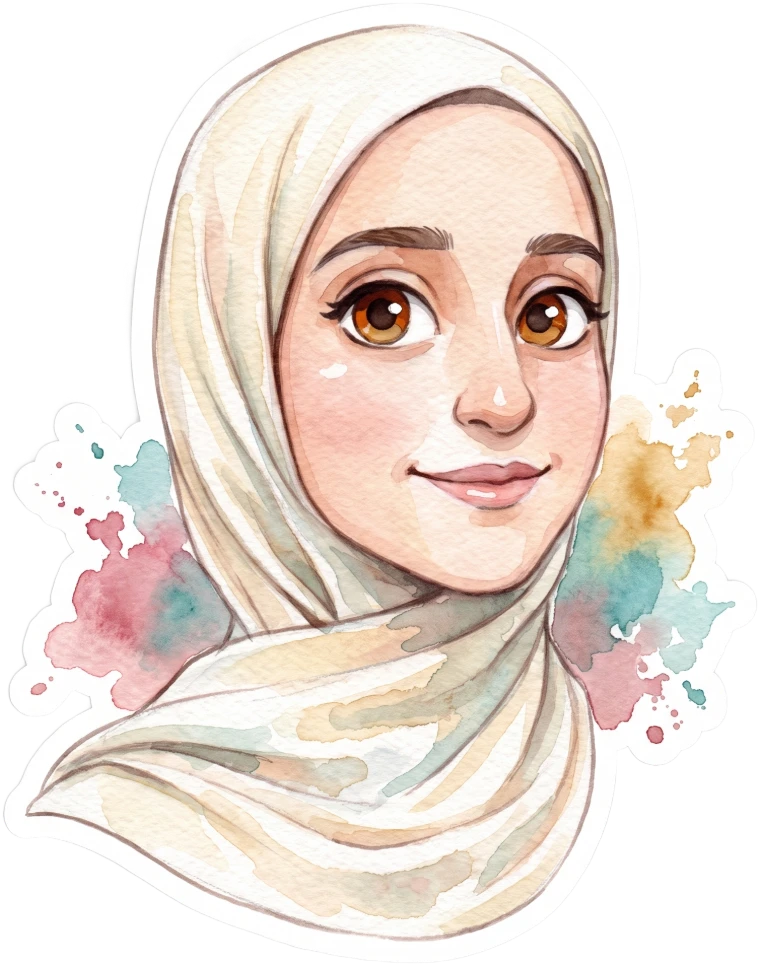

Moomken Media Center
Tripoli · Libya
Tripoli · Libya
Autumn Studio · Oct — Dec 2026
مرسم أسماء · Asma's Studio
لوحةٌ تكتمل
طبقةً… طبقة
تعرفين أنّ اللوحة المائية لا تُرسَم دفعةً واحدة: ورقةٌ تُبلَّل، ثم غسلةٌ أولى، ثم طبقاتٌ تتراكم حتى تظهر الصورة. هكذا هي هذه الرحلة: ستة فصول في اثني عشر أسبوعًا، تجمعين فيها السرد مع الاستراتيجية لتصنعي حملات رقمية تُرى وتُحَسّ. كلُّ مهمة تُنجزينها ضربةُ فرشاة — وكلُّ فصلٍ يكتمل يُضيف طبقةً جديدة إلى لوحتك في الأعلى.
”لا تسعي للكمال… بل للتجربة.“ — أسماء
حرّكي المؤشّر هنا… وارسمي بالحبر على الماء
